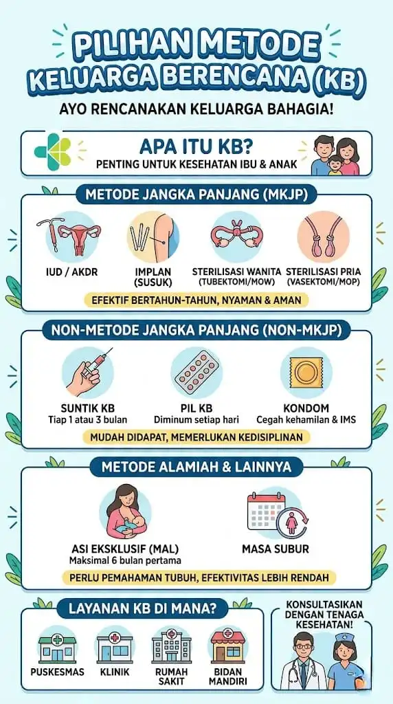

Ringkasan Program KB
Rencanakan keluarga Anda dengan bijak

Definisi KB
Upaya mengatur kelahiran, jarak kehamilan, dan usia ideal melahirkan untuk mewujudkan keluarga berkualitas serta memenuhi hak reproduksi.
Manfaat Utama
Menurunkan Angka Kematian
Mengurangi risiko kematian ibu dan bayi saat persalinan
Mencegah Kehamilan Tidak Direncanakan
Memastikan setiap kehamilan adalah kehamilan yang diinginkan
Menjaga Kesehatan Reproduksi
Memastikan organ reproduksi pasangan tetap sehat
Pilihan Metode Kontrasepsi
Metode Jangka Panjang
Efektif 3-10 tahun
IUD
5-10 tahun
Implan
3 tahun
Metode Permanen
Solusi jangka panjang
Tubektomi
Wanita
Vasektomi
Pria
Metode Jangka Pendek
Fleksibel dan dapat diubah
Suntik
Pil KB
Kondom
Metode Alamiah
Tanpa alat bantu medis
ASI Eksklusif (MAL)
Metode Amenorea Laktasi
Hitung Masa Subur
Pemantauan kesuburan
Layanan Kesehatan
Masyarakat bisa mendapatkan layanan KB di:
Penting!
Konsultasikan pilihan Anda dengan tenaga kesehatan untuk memastikan kecocokan medis dan memahami efek sampingnya.